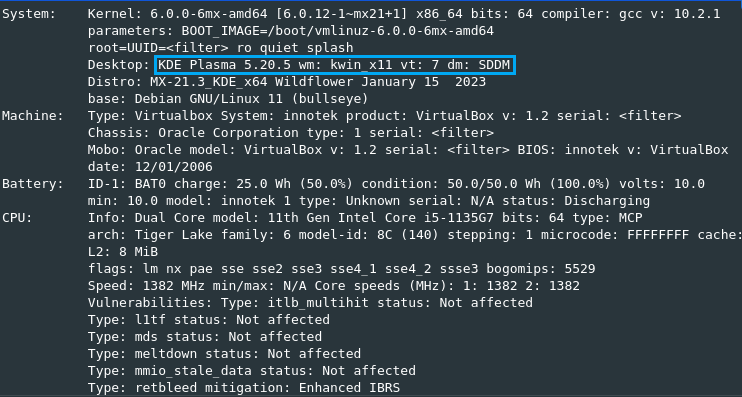

Origem do MX Linux
O MX Linux começou em uma discussão sobre opções futuras entre os membros da comunidade MEPIS em dezembro de 2013. Os desenvolvedores do antiX se juntaram a eles, trazendo o sistema de construção ISO, bem como a tecnologia Live-USB/DVD. O nome “MX” foi escolhido para combinar a primeira letra de Mepis com a última de antiX, simbolizando assim a sua colaboração. Para ser listado no DistroWatch, o MX Linux foi apresentado como uma versão do antiX e lançou sua primeira versão em março de 2014. Recebeu sua própria página do DistroWatch como uma distribuição separada com o lançamento do primeiro Public Beta do MX-16 em 2 de novembro de 2016.
Equipe de desenvolvedores
- Adrian
- Dolphin_Oracle
- Jerry3904
- Spokesman
- anticapitalista
- asqwerth
- peregrine
- richb
- Stevo
Veio para resolver algum problema?
Para alguns é um hobby, para alguns é retribuir à comunidade de software livre que tanto nos deu, para alguns é um trabalho de amor. E enquanto nenhum de nós faz isso pelo dinheiro, as doações ajudam porque hospedar este site e os repositórios MX e os servidores rsync para sincronizar os espelhos de terceiros custam dinheiro que essas doações cobrem.
Última versão lançada
MX-21.3
Data em que foi lançada
15 de janeiro de 2023
Versão Kernel

Ambiente em que a distribuição está instalada
Versão da Distribuição instalada

Galeria de imagens